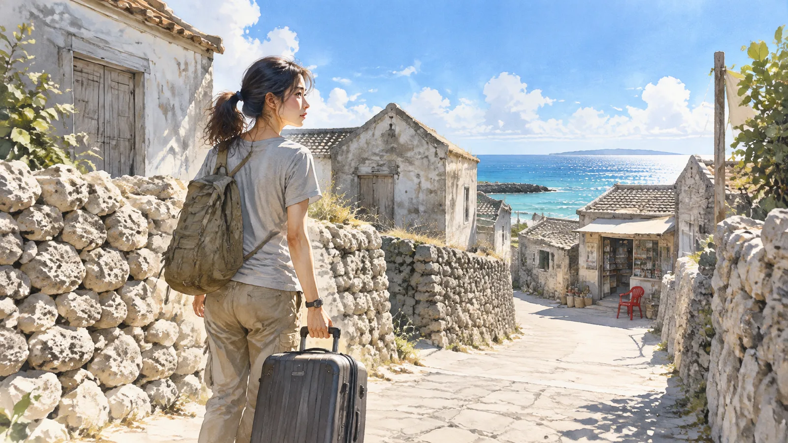
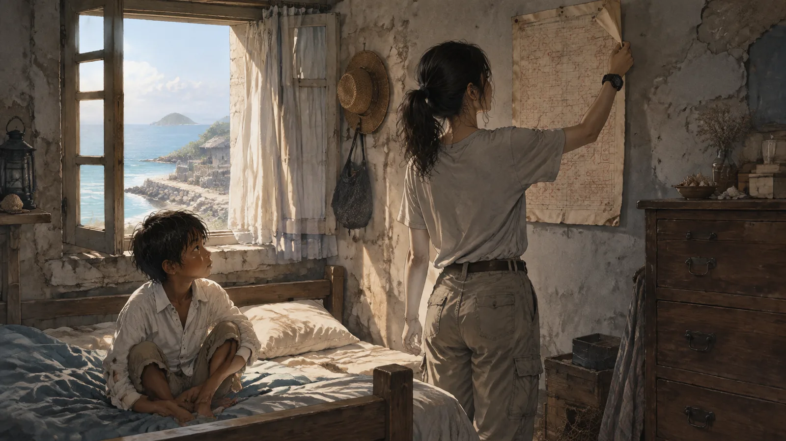
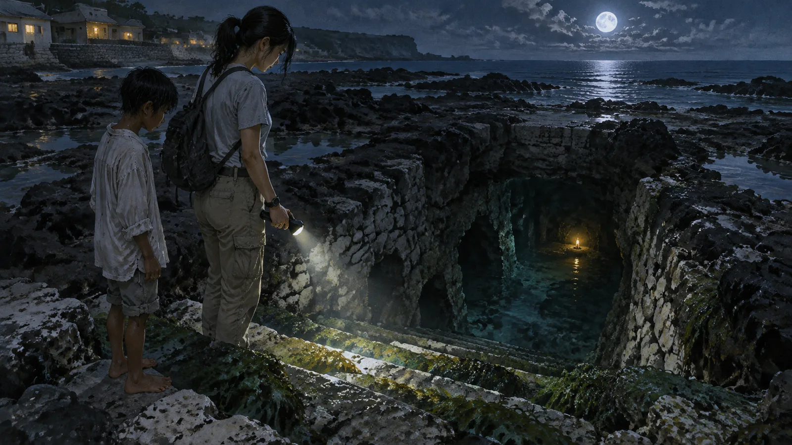
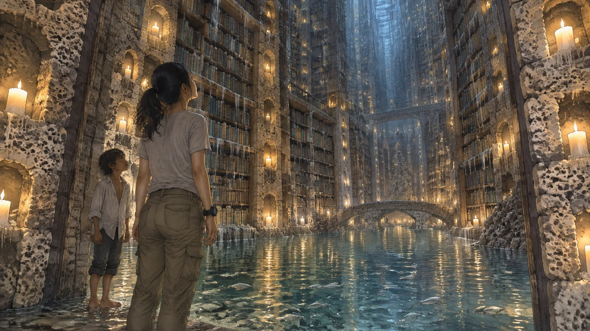
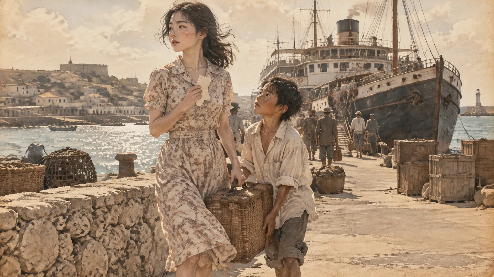
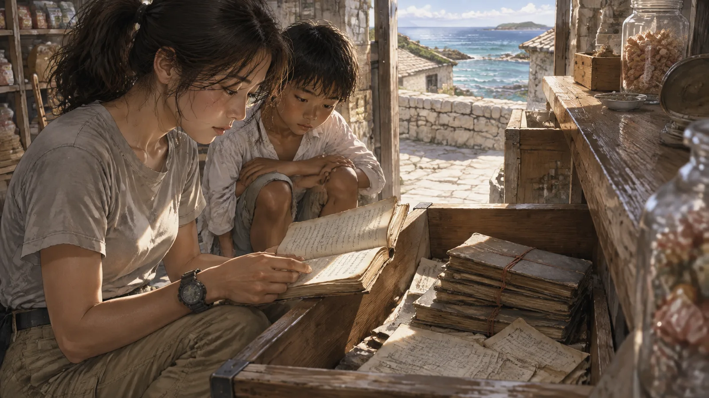
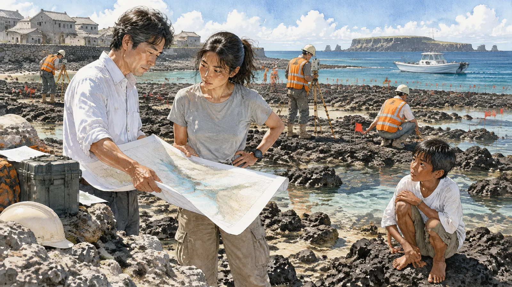
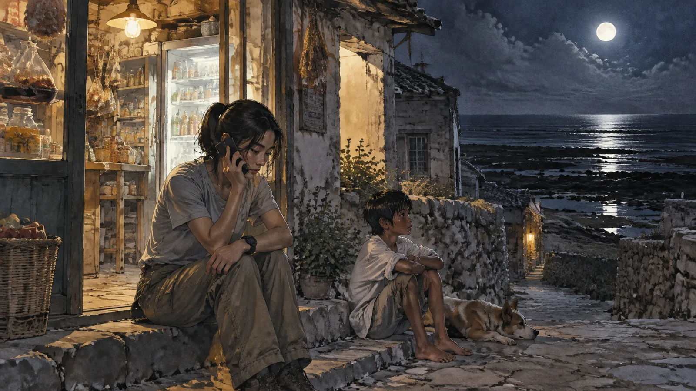
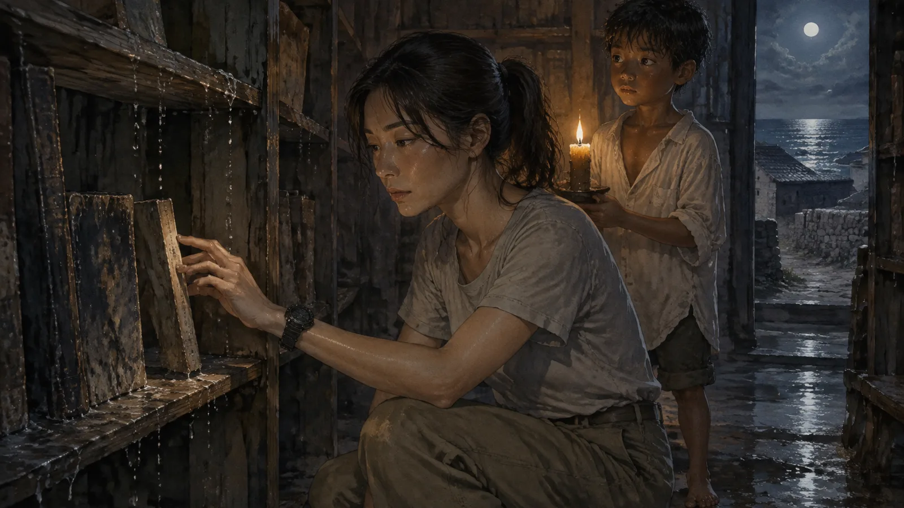
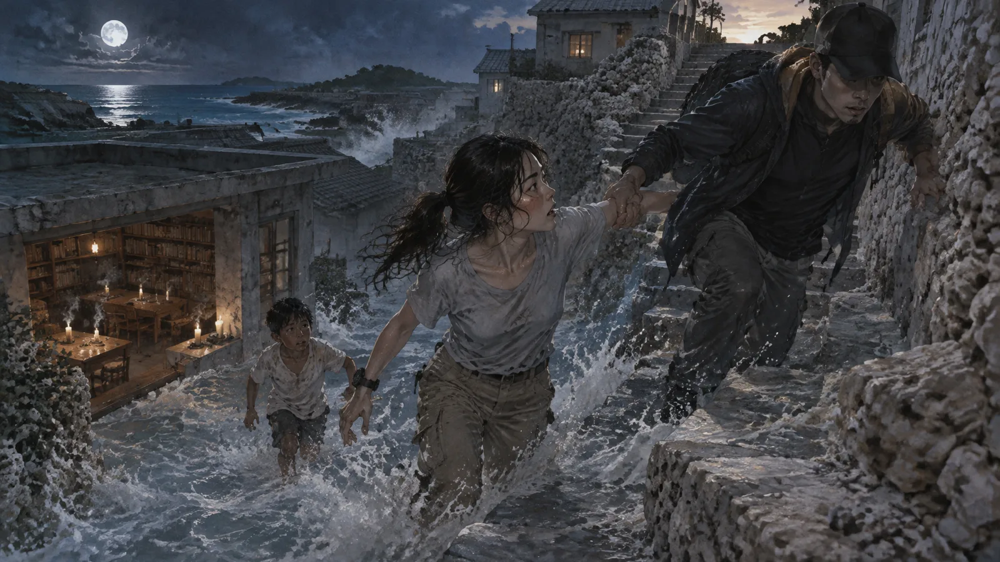

第一章回島
船從馬公開出去的時候，林海若還在算那間柑仔店裡到底有幾箱過期的維士比。
她算了三次都沒算清楚。阿嬤走得突然，店裡的東西沒有人整理，堂哥從高雄打電話來說：「妳是做研究的，妳比較會整理，妳去。」好像整理一間六十年的柑仔店和整理一份海洋生物調查資料是同一件事。
船很小，開往潮嶼的船永遠都很小。這座島在澎湖群島的最西邊，地圖上是一個逗點，逗點旁邊寫著「人口：一一二」。海若在這裡出生，十八歲離開，之後每年只回來一次，過年，待三天，第四天一早就搭船走。阿嬤每次送她到碼頭，都說同一句話：「潮水退了就看得到路。」
她一直以為那是一句勸她開車小心的話。潮嶼的環島公路有一段會被漲潮淹掉，退潮才走得過去。
船靠岸的時候是下午四點，太陽把整座島曬成一片白。碼頭上沒有人接她，島上剩下的一百一十二個人平均年齡七十一歲，沒有人會為了一個回來整理柑仔店的孫女走這麼遠。海若拖著行李箱，輪子在珊瑚石鋪的路上發出很難聽的聲音，走過三間已經封起來的房子，走過一座沒有人拜的小廟，走到島的東邊，阿嬤的店。

店的招牌還在，「月桂商店」，四個字是阿嬤自己用油漆寫的，「桂」字的木字旁寫得太寬，看起來像「木圭」。海若小時候一直以為阿嬤叫林月木圭。
門沒有鎖。潮嶼沒有人鎖門，反正也沒有人來偷。
店裡的味道和她記憶中一模一樣：曬乾的魷魚、樟腦丸、阿嬤的萬金油，還有一種很淡的、像是海水滲進水泥裡的鹹味。冰箱還插著電，發出低低的嗡嗡聲，裡面有半瓶阿嬤沒喝完的蘋果西打。
她把行李箱放在門邊，站了一會兒，才發現自己不知道要從哪裡開始。
阿嬤的房間在店的後面，一張木板床，一個五斗櫃，牆上一張全家福——那是二十年前拍的，海若八歲，站在最前面，缺一顆門牙。床頭的牆上釘著一張紙，是潮汐表，馬公氣象站每年印的那種。上面用紅筆圈了很多日期，全部都是大潮的日子，每一個圈旁邊都寫了一個小小的時間：凌晨三點十二分、凌晨三點四十分、凌晨兩點五十八分。

海若把潮汐表拿下來，翻到背面。背面是空白的，只有一行鉛筆字，寫得很小：
「阿海的書還沒讀完。」
她不認識阿海。家裡沒有這個人。
✦
晚上，島上的里長來看她。里長姓陳，七十六歲，一輩子沒有離開過潮嶼，說話的時候會把每一句的尾音拉得很長，像在跟海講話。
「妳阿嬤很厲害的。」他坐在店門口的塑膠椅上，喝著海若給他的蘋果西打，「她這間店開了六十年，島上的人要什麼她都有。颱風來的時候，她這裡是最後一間關門的。」
「里長，你認識一個叫阿海的人嗎？」
里長的手停了一下。
「哪一個阿海？」
「我不知道。阿嬤留了一張紙，寫著『阿海的書還沒讀完』。」
里長把西打喝完，把空瓶放在地上，看著遠處的海。天已經暗了，潮水正在退，露出一大片黑色的潮間帶，遠遠望去像一片燒過的田。
「妳阿嬤有一個弟弟。」他終於說，「比她小六歲，叫林海。一九六一年，他十二歲，大退潮的時候一個人走到潮間帶最外面，沒有回來。那時候妳阿嬤十八歲，是她看著他走出去的。」
海若從來沒有聽過這件事。
「後來妳阿嬤就沒有再離開過這座島。」里長站起來，拍了拍褲子上的灰，「那個年代，島上的女孩子十八歲就要出去了，去高雄，去台北，去工廠。她本來也要走的，船票都買好了。她弟弟不見的隔天，她把船票撕了。」
「為什麼？」
里長看著她，看了很久。
「妳去問潮水。」他說，「妳阿嬤每次大潮都會下去，六十年了。妳如果想知道，明天凌晨三點，妳就會知道。」
第二章大退潮
海若沒有打算三點起床。
她是做研究的。她在中山大學的海洋科學系當了四年研究助理，量過幾千隻招潮蟹的螯，數過無數個潮池裡的海葵。她知道潮汐是月球引力的結果，知道大退潮的時候潮間帶會露出平常看不到的三百公尺，知道那裡有什麼——礁石、海藻、藤壺、幾隻來不及躲的螃蟹，還有很多很多的垃圾。
她不相信里長的話。她只是睡不著。
阿嬤的床太硬，枕頭有樟腦丸的味道，窗外的海一直在講話，說一些她聽不懂的事情。凌晨兩點五十分，她放棄了，坐起來，看著那張潮汐表。
今天是大潮。上面有阿嬤的紅圈，旁邊寫著：三點十二分。
她穿上外套，拿了手電筒，走了出去。
✦
潮嶼的夜晚沒有光害。月亮很大，掛在西邊，把整片潮間帶照得像一面破掉的鏡子。海若沿著阿嬤走了六十年的那條小路往下走——她知道是這條路，因為路上的珊瑚石被踩得很平，平到像有人特地磨過。
潮水退得很遠。比她印象中的任何一次都遠。
她走過平常的潮池，走過那些她做研究時會蹲下來看的礁石，走過一艘不知道是誰的、已經爛掉的舢舨。腳下的地變得越來越硬，越來越平，然後她低下頭，看見腳下不是礁石。
是階梯。
用珊瑚石砌的階梯，一階一階往下，往海的方向。階梯上長滿了海藻，滑得像肥皂，可是每一階的邊緣都被磨得很圓，像很多很多人走過。

海若站在第一階上，手電筒的光往下照，照到的是黑暗，還有很遠很遠的地方一點小小的光，黃色的，像蠟燭。
她想起里長說的：妳去問潮水。
她走了下去。
階梯比她想的還長，她數到第四十七階的時候放棄了。空氣越來越濕，越來越冷，可是奇怪的是，並不悶——有風，從下面吹上來，帶著一種她說不出來的味道，不是海的味道，是紙的味道。舊書的味道。
然後階梯到了盡頭。
她站在一扇門前面。門是木頭的，泡過水的那種深褐色，門框上長著細小的珊瑚，像一排排的牙齒。門是開的。門裡面，是一整座圖書館。
海若站在門口，很久很久沒有動。
那是一個很大的空間，大到手電筒照不到盡頭。牆是珊瑚石砌的，一直往上，往上，高到看不見天花板。牆上全部都是書架，一層一層，一直往上，像一座倒過來的井。書架上放滿了書，每一本都濕漉漉的，書脊上的水滴在燈光裡閃著光。

燈是真的蠟燭，放在珊瑚石鑿出來的凹洞裡，幾百根，把整個空間照得像一場很安靜的祭典。
地上有水，大約到腳踝，冰涼的，海若踩進去的時候，看見水裡有小魚游過，銀色的，一閃就不見了。
「妳來晚了。」一個聲音說。
海若轉過頭。一個男孩站在最近的一排書架前面，十二歲左右，光著腳，穿著一件太大的白襯衫，褲子捲到膝蓋。他的頭髮是濕的，皮膚是那種曬了太多太陽的島民才有的深棕色，手裡抱著一本書。
「阿嬤說妳三點十二分會到。」他說，「現在三點二十七了。」
「你是誰？」
男孩歪了歪頭，像在想這個問題值不值得回答。
「我是圖書館員。」他說，「妳可以叫我阿海。」
第三章圖書館員
海若在珊瑚石砌的階梯上坐下，因為她的腿在抖。
阿海沒有笑她。他把手裡的書放回架上，走過來，在她旁邊坐下，兩隻腳泡在水裡晃來晃去。
「妳長得很像她。」他說，「阿桂。妳阿嬤。她十八歲的時候就長妳這樣。」
「你認識我阿嬤？」
「她每次大潮都來。」阿海說，「六十年，一次都沒有缺。颱風天也來，她說颱風天的潮退得特別遠，可以看到更多書。」
海若看著他。這個孩子的臉在燭光裡沒有一絲皺紋，眼睛很亮，講話的時候會不自覺地咬下嘴唇——這個動作她認得，阿嬤也會，每次算錯錢的時候。
「你是林海。」她說，「一九六一年不見的那個。」
「嗯。」
「你死了。」
「我不知道。」阿海很認真地想了一下，「我走到這裡，然後就沒有再上去過。上面的人說我死了，那大概就是死了吧。可是我不覺得。我每天都在整理書，很忙。」
「這裡是什麼地方？」
阿海站起來，走到最近的書架前面，抽出一本書。書是濕的，封面上沒有字，可是當他的手碰到書脊的時候，水慢慢退掉了，書變成乾的，封面上浮現出一個名字。
「陳進財。」阿海念出來，「里長。這是他的書。」
「什麼書？」
「他沒有活過的那些日子。」
阿海把書打開，海若湊過去看。書頁上是密密麻麻的字，可是那不是印刷體，是手寫的，每一頁的筆跡都不一樣，有的工整，有的潦草，像是很多個人輪流寫的。
「里長十九歲的時候，本來要跟他表哥去基隆跑船。」阿海說，「船票買了，行李也收了。出發前一天，他阿爸摔斷腿，他就沒走。這本書寫的，就是他走了以後的那六十年。他在基隆的船上做了什麼，遇到誰，在哪裡結婚，生了幾個小孩，死在哪裡。」
「這……」
「每一個潮嶼的人都有一本。」阿海說，「妳站在一個路口，往左走了，往右的那條路就會變成一本書，放在這裡。有的人只有薄薄一本，因為他們沒有什麼路口。有的人有好幾本。」
他把里長的書合上，放回架上，水又慢慢滲回書頁裡。
「妳可以借。」他說，「一次一本，下一次漲潮以前要還。」
「借了以後呢？」
阿海看著她，眼睛在燭光裡亮得像兩顆玻璃珠。
「妳會活一遍。」他說，「從第一頁活到最後一頁。妳會知道那條路是什麼樣子。」
海若忽然覺得冷。不是水的冷，是另一種。
「那為什麼你不能上去？」
阿海沉默了很久。
「因為還有書沒讀完。」他終於說，「有一本書，六十年了，一直沒有人讀完。讀完那本書，我才能走。這是規矩。」
「誰的書？」
阿海沒有回答。他轉身走進書架之間，白襯衫在燭光裡越來越小，最後變成一個模糊的白點。
「潮水一個小時後就漲了。」他的聲音從遠處傳來，「妳要借的話，快一點。」
第四章阿嬤的書
海若在書架之間走了很久。
書架沒有分類，沒有編號，沒有任何規則。她試著找一個熟悉的名字，可是書脊上的字只有在手碰到的時候才會浮現，她碰了幾十本，看到幾十個她不認識的名字——潮嶼六十年來所有的人，包括早就死掉的，包括早就搬走的。
然後她碰到一本很厚的書。
比其他的都厚，厚到書脊有她的手掌那麼寬。水退掉的時候，封面浮現出三個字：林月桂。
海若的手停在上面。
她想起阿嬤送她到碼頭時說的話。想起阿嬤每一年過年時把紅包塞進她手裡，紅包裡永遠是六百元，六十年不變的六百元。想起阿嬤在店門口坐了六十年的那張塑膠椅，椅腳磨得比別的都短。想起里長說的：她本來也要走的，船票都買好了。
她把書抽出來。
書很重。她抱著它走到樓梯口，在阿海剛剛坐過的位置坐下，翻開第一頁。
✦
一九六一年七月十四日。
林月桂十八歲，站在馬公的碼頭上，手裡握著一張去高雄的船票。旁邊站著一個男人，二十四歲，姓吳，是來島上收魚的中盤商，會彈吉他，會唱那時候收音機裡在播的歌。他說高雄有一間歌廳在找人，妳的聲音很好聽，妳去唱，唱一個月的錢比妳阿爸捕一年的魚還多。

弟弟阿海站在她旁邊，光著腳，抱著她的行李。他說：「阿姊妳走了以後，誰帶我去看退潮？」
她說：「你自己去。你十二歲了。」
然後她上了船。
海若「看」到了這一切——不，不是看到，是活到了。她就是林月桂，她站在船尾看著潮嶼變小，鹹風吹在臉上，那個姓吳的男人的手搭在她肩上，她的心臟跳得很快，一半是害怕，一半是別的東西。
然後是高雄。歌廳很吵，很亮，燈光是紅色的，她第一次上台的時候腿一直抖，唱到第二首歌才穩下來。台下有人拍手，有人吹口哨。姓吳的男人在後台等她，說：妳看，我就說妳可以。
她唱了三年。一九六四年，她跟姓吳的男人結婚，生了一個女兒。一九六八年，姓吳的男人跟另一個歌手跑了，留下她和女兒和一間租來的房子。她繼續唱，唱到嗓子壞掉，改在歌廳當領班，再改在夜市擺攤賣滷味。女兒長大了，考上大學，是家裡第一個念大學的人。
一九九九年，她五十六歲，回潮嶼一次。柑仔店已經沒有了，那個位置變成一間空屋。里長還在，看到她說：「阿桂，妳回來了。」
她說：「我回來看阿海。」
里長說：「阿海早就不在了，妳走的那一年，他一個人去看退潮，沒有回來。」
書裡的林月桂站在潮間帶的邊緣，站了一整個晚上。她沒有找到那個階梯。潮水漲上來的時候，她走回去，第二天搭船回高雄，再也沒有回來。
二〇二四年，她八十一歲，死在高雄一間安養院裡，女兒在旁邊，孫女在美國，沒有趕回來。
最後一頁是空白的。
✦
海若把書合上的時候，蠟燭已經燒掉了一半。
她的臉是濕的，不知道是水還是別的。她抱著那本書，抱了很久，然後她發現一件事——她想不起阿嬤的聲音了。
她記得阿嬤說過的每一句話，「潮水退了就看得到路」，記得字，記得意思，可是她想不起那個聲音是什麼樣子。高的還是低的，沙啞的還是清亮的，說「路」的時候尾音是往上還是往下。
不見了。像被什麼東西拿走了。
「妳讀完了。」阿海站在她面前，不知道什麼時候回來的。
「我阿嬤的聲音。」海若說，「我想不起來了。」
阿海點點頭，一點也不驚訝。
「這是借書的代價。」他說，「妳活了一遍別人沒活過的日子，就要拿一件妳自己活過的東西來換。這是規矩。」
「什麼規矩？誰定的？」
「潮水定的。」阿海說。他伸出手，把書從她懷裡拿走，抱在胸前，「潮水要漲了。妳該上去了。」
第五章借書規則
海若在阿嬤的床上醒來的時候，是中午。
太陽從窗戶照進來，把房間照得很白。她的褲管是濕的，鞋子上沾著海藻，手電筒的電池用完了。她躺在床上，看著天花板，試著想阿嬤的聲音。
沒有。
她記得阿嬤的臉，記得阿嬤的手，記得阿嬤那件永遠穿著的花襯衫。可是聲音不見了，像一段錄音被人用剪刀剪掉，剩下的部分還在，可是中間是一段空白。
她坐起來，拿起手機，翻到去年過年的影片。影片裡阿嬤坐在店門口，對著鏡頭揮手，嘴巴在動。
沒有聲音。
她把音量開到最大，影片裡的海浪聲很清楚，遠處狗叫的聲音很清楚，堂哥在旁邊笑的聲音很清楚。阿嬤的嘴巴在動，可是沒有聲音。
海若把手機放下，走到店裡，從貨架上拿了一罐沒過期的礦泉水，一口氣喝完。
然後她拿出筆記本，開始寫。這是她的習慣，做研究的人的習慣：遇到不理解的東西，先記錄。
「潮間帶圖書館。大退潮時出現，入口在礁盤外側約三百公尺處，珊瑚石階梯，四十七階以上。內部空間無法估計。圖書館員：林海，十二歲，一九六一年失蹤，狀態不明。」
「藏書：潮嶼居民『未活過的人生』，每人至少一本。借閱規則：一次一本，下次漲潮前歸還。代價：一段真實記憶。」
「已借閱：林月桂（一本）。已失去：阿嬤的聲音。」
她看著最後一行，筆停在那裡。
✦
下午，她去找里長。
里長在廟前面的榕樹下和另外兩個老人下棋。看到她，他沒有問她昨晚有沒有去，只是說：「妳的臉色很差。」
「里長，你去過那裡嗎？」
里長把手裡的棋子放下。另外兩個老人很識相地站起來，走到廟裡去了。
「一次。」他說，「四十年前。我借了我自己的書。」
「然後呢？」
「然後我知道我如果去基隆跑船，會在一九八三年死在一場海難裡。」里長說得很平淡，像在講別人的事，「船翻了，十一個人，只有兩個活下來，我不是那兩個。」
「所以你沒有再去？」
「我還了書，就沒有再去了。我知道我留在島上是對的，這樣就夠了。」他看著海若，「我用一件事換的。我忘了我阿母的臉。到現在都想不起來。家裡有她的照片，我看著照片，知道那是她，可是我閉上眼睛，什麼都沒有。」
海若坐在他對面的石凳上。榕樹的鬚垂下來，在風裡輕輕晃。
「阿嬤去了六十年。」她說，「六十年，每一次大潮。她換掉了多少東西？」
里長沒有回答。
「她借的是誰的書？」海若問，「不是她自己的。她自己的書我昨天讀了，最後一頁是空白的，沒有人讀完過。她借的是誰的？」
里長把棋盤上的棋子一顆一顆收進盒子裡，動作很慢。
「阿海的。」他說，「她每次去，都借阿海的書。讀他沒有活過的那些日子。讀他長大，讀他結婚，讀他老。一次一本，六十年，讀了七百多次。」
「為什麼？」
「因為她覺得是她害死他的。」里長把盒子蓋上，「那天她本來要帶他去看退潮，可是她要去馬公買船票，她說你自己去。他就自己去了。」
海若想起書裡的那一幕。阿海抱著行李，說：阿姊妳走了以後，誰帶我去看退潮。
「所以她一次一次地讀他的書，」她慢慢地說，「用她自己的記憶去換。」
「一次換一件。」里長說，「六十年，七百多件。妳阿嬤最後那幾年，已經不太記得自己的事了。她記得店裡每一樣東西的價錢，記得島上每一個人的名字，可是她不記得她自己十八歲的時候長什麼樣子，不記得她結婚那天下不下雨，不記得妳阿公的聲音。她把她自己，一件一件換給阿海了。」
海若站起來。她覺得腳下的地在晃，像潮水在下面推。
「她為什麼不停？」
「妳昨天讀了她的書。」里長說，「妳現在想停嗎？」
第六章帳本
海若是在清貨的時候找到那本帳本的。
它塞在櫃檯下面最裡面的抽屜，壓在一疊發票和幾張中獎的統一發票下面——阿嬤中過三次兩百塊，一次都沒有去領。帳本是那種最便宜的、封面印著「國語日報」字樣的橫線簿，一共有七本，用橡皮筋綁在一起，橡皮筋已經脆掉了，一碰就斷。
她本來以為是店裡的帳。
第一本的第一頁，日期是一九六一年八月十二日。那是阿海不見以後的第一個大潮。上面只寫了一行：

「借：阿海。換：船票的樣子。」
海若坐在櫃檯後面的地板上，把七本帳本一頁一頁翻過去。
「借：阿海。換：吳先生的吉他聲。」
「借：阿海。換：十六歲生日那天吃的東西。」
「借：阿海。換：阿母罵人的樣子。」
「借：阿海。換：第一次看到馬公的感覺。」
每一頁都是一樣的格式。借的永遠是阿海，換的永遠不一樣。阿嬤的字很大，很用力，有幾頁的紙被筆尖戳破了。海若一頁一頁地讀，讀到第三本的時候，日期到了一九七〇年。
「借：阿海。換：結婚那天有沒有下雨。」
「借：阿海。換：阿川第一次叫我阿母的聲音。」
阿川是海若的父親。她把這一頁看了很久。她想起父親說過，阿嬤從來不提他小時候的事，問她，她就說「忘記了」。父親一直以為那是阿嬤不想講。
第五本，一九九〇年代。
「借：阿海。換：海若出生那天的體重。」
「借：阿海。換：海若的第一顆牙。」
「借：阿海。換：海若學走路的樣子。」
海若把帳本放在膝蓋上。店裡的冰箱嗡嗡地響，外面有一隻狗在叫，很遠。
她想起阿嬤每年給她的紅包。六百元，六十年不變。她一直以為那是阿嬤的固執。現在她想，也許是因為阿嬤不記得去年給了多少，只記得自己寫在帳本上的一個數字，所以每一年都給一樣的。她想起阿嬤從來不看她小時候的照片。她以為是阿嬤不喜歡照相。現在她想，也許是因為照片裡的那些日子，阿嬤已經沒有了。
第七本的最後一頁，日期是今年三月。字已經很抖了，抖到幾乎看不出來是字。
「借：阿海。換：」
後面是空的。
她翻回前一頁。三月之前的那一次，一月。
「借：阿海。換：我自己的名字。」
海若把七本帳本抱在懷裡，在地板上坐了很久。她想起阿嬤過世前那幾個月，堂哥打電話來說阿嬤的狀況不太好，「有時候會不知道自己是誰」，醫生說是老年失智。堂哥說得很平淡，因為那是很普通的事情，八十幾歲的老人，很普通。
可是那不是失智。那是她一件一件換掉的。她把自己的名字換給了阿海，換他五十歲那一年，換他跟阿姊在碼頭上見面的那一天。然後她連自己叫什麼都不知道了，只知道每個大潮要下去，只知道有一本書還沒讀完。
海若把帳本放回抽屜。她沒有哭。她只是在筆記本上寫下一行字：
「林月桂，一九六一至二〇二五，共交換七百二十三件。最後一件：自己的名字。」
然後她在下面又寫了一行，寫得很小：
「林海若，已交換一件。剩下的，還不知道。」
第七章開發商
第三天，島上來了一群穿反光背心的人。
他們從馬公搭快艇過來，帶著測量儀器和一疊圖紙，在潮間帶上插了一排紅色的旗子。領頭的是一個四十幾歲的男人，皮膚白得像沒有曬過太陽，講話很客氣，客氣得讓人不舒服。

「我們是永昇開發的。」他遞給海若一張名片，「潮嶼的觀光開發案，妳應該有收到公文？」
海若沒有收到。她連潮嶼有開發案都不知道。
「東側潮間帶填海造陸，」男人打開圖紙，指給她看，「這裡，蓋一個度假村，五十間房，還有一個小碼頭。妳阿嬤的店在這個位置，剛好在規劃區的邊緣。我們願意用很好的價格買下來。」
圖紙上，一片藍色的區域蓋在潮間帶上，剛好覆蓋了那個階梯的位置。
「什麼時候動工？」
「下個月。」男人說，「環評已經過了。潮間帶的生態調查報告說這裡沒有保育類物種，就是一般的礁盤，沒什麼特別的。」
海若看著那份報告的封面。做調查的是一間她知道的顧問公司，出了名的「什麼都沒有」。
「誰做的調查？」
「我們委託的。」男人笑了一下，「妳是海洋系的？那妳應該知道，這種調查就是走個程序。」
測量隊裡有一個人一直沒有講話，站在最後面，戴著帽子，帽簷壓得很低。海若看了他一眼，又看了一眼。
「阿翔？」
男人抬起頭。是陳志翔，里長的孫子，海若小學的同學，唯一一個和她同一年出生的潮嶼小孩。他們一起在潮間帶抓過螃蟹，一起搭船去馬公念國中，他念到高中就沒有再念了，海若聽說他在高雄做工。
「妳回來了。」阿翔說，聲音很小。
「你在幫他們做事？」
阿翔沒有回答，只是把帽簷壓得更低。
✦
晚上，阿翔來店裡找她。
他帶了兩瓶啤酒，坐在阿嬤的塑膠椅上，海若坐在門檻上。潮水正在退，遠處的旗子在月光下變成一排小小的黑點。
「我沒有辦法。」阿翔說，「我在高雄做了十年工，去年出車禍，腰壞了，做不了粗工。永昇找我做地陪，一天兩千，我需要錢。」
「你知道那個地方是什麼嗎？」
阿翔打開啤酒，喝了一口，看著遠處的旗子。
「我阿公說過。」他說，「小時候，他跟我說潮間帶下面有一間圖書館，每個人的書都在那裡。我以為是童話。」
「不是童話。」
阿翔看著她。
「妳去了？」
「去了兩次。」海若說，「我讀了阿嬤的書。我知道她如果離開這座島會變成什麼樣子。我也知道她為什麼六十年沒有離開。」
阿翔沉默了很久。啤酒瓶上的水珠滴在他的褲子上。
「填海以後，那個地方就沒有了。」他說。
「對。」
「妳想怎麼樣？」
海若不知道。她是一個研究助理，不是環保運動者，不是律師，不是任何可以擋住一家開發公司的人。她只是一個回來整理柑仔店的人，一個想不起阿嬤聲音的人。
「我不知道。」她說，「我還有二十七天。」
第八章電話
她打電話給父親的時候，是台灣時間晚上十點，高雄的父親剛下班。

父親在高雄一家漁具公司做了三十年，做到副理。他是阿嬤唯一的兒子，十八歲離開潮嶼，之後每年回來過年，跟海若一樣，待三天，第四天走。他和阿嬤之間有一種海若從小就看得出來的東西——不是不親，是隔了一層什麼，像兩個人隔著一片玻璃講話，聽得到，摸不到。
「店整理得怎麼樣？」父親問。
「差不多了。」海若說，「爸，阿嬤有沒有跟你提過一個叫阿海的人？」
電話那頭安靜了一下。
「她的弟弟。」父親說，「我知道。小時候聽里長講的。妳阿嬤自己從來不講。」
「你知道她每次大潮都會下去潮間帶嗎？」
「知道。」父親說，「我小時候跟過她一次。七歲吧。半夜她起來，我也起來，跟在她後面走。她走到礁盤的最外面，就站在那裡，站到潮水漲上來。我以為她在等什麼人。我問她，她說：『你回去睡。』」
「她沒有走下去？」
「走下去哪裡？」父親說，「外面就是海了。」
海若沒有解釋。她問了另一個問題。
「爸，阿嬤是不是很多事情都不記得？」
父親又安靜了一下，這次比較久。
「妳怎麼知道？」
「我找到她的帳本。」
「哦。」父親說。他的聲音變了一點，變得比較低，像在講一件很久沒有講的事情，「她忘記我的生日，妳知道嗎？從我十幾歲開始。每年我生日，她都不記得。我以為她不在乎。後來我長大了，有一次過年，我問她，我說阿母妳知道我幾月幾號生的嗎，她想了很久，說不知道。她說：『我知道你是我的兒子，這樣不夠嗎？』」
「我那時候很生氣。」父親說，「我覺得她一個媽媽，怎麼會連兒子的生日都不記得。我十八歲就走了，就是因為這個。我覺得她心裡沒有我。」
海若握著電話，看著櫃檯下面那個抽屜。
「爸，」她說，「她不是不記得。她是拿去換了。」
「換什麼？」
海若想了很久，要怎麼跟一個五十八歲的、在漁具公司做副理的父親，解釋潮間帶下面有一座圖書館。
「換她弟弟的人生。」她說，「一次一件，六十年。她把她自己記得的事情，一件一件換掉，去讀她弟弟沒有活過的日子。你的生日，你第一次叫她阿母的聲音，你小時候的樣子。都在帳本上。她不是不在乎。她是全部拿去換了。」
電話那頭沒有聲音。海若以為斷線了，看了一眼手機，通話時間還在跑。
「妳說什麼？」父親終於說，聲音很小。
「我說，她記得的東西，都拿去換了。可是她每次換，都寫在帳本上。七本。全部都在。她怕自己忘記她忘記了什麼。」
父親沒有再說話。海若聽見電話那頭有一個很小的聲音，像是有人用手摀住嘴巴。她沒有說「你還好嗎」。她等。
過了很久，父親說：「妳把帳本留著。過年我回去看。」
「好。」
「海若。」
「嗯。」
「妳說她一次換一件。妳讀了她的東西沒有？」
海若看著窗外。潮水在退，礁盤一寸一寸露出來。
「讀了一本。」她說。
「那妳換掉了什麼？」
「她的聲音。」
父親沉默了一下，然後說了一句海若沒有想到的話。
「那我講給妳聽。」他說，「她的聲音是這樣的：她講話很快，尾音會往上，說『路』的時候嘴巴會張得很圓，因為那是澎湖腔。她生氣的時候不會大聲，會變小聲，小到妳要湊過去聽。她叫我阿川的時候，『川』會拖得很長，像在叫一隻狗。她叫妳海若的時候，『若』會很輕，像怕把妳吹走。」
海若閉上眼睛。
她沒有聽見。她仍然沒有聽見那個聲音。可是她記住了父親說的每一個字，一個字一個字地記住，像在做筆記，像在做研究，像在把一樣快要消失的東西，用另一種方式留下來。
「謝謝。」她說。
「不要再換了。」父親說，「留一點給自己。」
第九章自己的書
第四次下去的時候，海若沒有帶手電筒。
她已經認得路了。四十七階，第三十一階特別滑，第四十階缺了一角。門是開的，蠟燭是亮的，水到腳踝，小魚在腳邊游。
阿海在整理書。他站在一架很高的梯子上，把一本濕的書塞進最上面的架子。看到海若，他從梯子上滑下來，襯衫在空中鼓起來像一面帆。
「妳又來了。」
「我想找我的書。」
阿海的表情變了一下。很細微，可是海若看到了。
「妳的書很新。」他說，「新的書不好找，它們還在長。」
「什麼意思？」
「妳還活著。妳每天都在走路口。妳的書每天都在變厚，變薄，換位置。」阿海說，「阿嬤的書是死的，很好找。里長的書快死了，也好找。妳的，不一定找得到。」
「我想試試。」
阿海看了她很久，然後點點頭，走進書架之間。海若跟在後面。
他們走了很久。比前幾次都久，走過的書架越來越高，蠟燭越來越少，最後只剩下阿海手裡的一根。書架上的書從濕變成更濕，有的還在滴水，滴在水面上，發出很小很小的聲音。
「這裡。」阿海停下來。
那是一個很暗的角落，書架上只有幾本書，全部都濕得像剛從海裡撈出來。阿海伸手拿了一本，遞給她。

海若的手碰到書脊。水退掉了，很慢，比別的書都慢。封面上浮現出三個字：林海若。
書很薄。薄到她有點難過。
「這是妳留在島上的那一本。」阿海說，「十八歲那年，妳阿嬤問妳要不要留下來幫她顧店，妳說不要。這本書，是妳說要的那一條。」
海若翻開第一頁。
✦
十八歲的林海若站在碼頭上，行李箱在腳邊。阿嬤站在她旁邊，沒有說話。船來了，船員在喊，她看著船，看著阿嬤，看著那間店，然後她拎起行李箱，轉身走回去了。
她留下來了。
她在店裡幫忙，學會了算帳，學會了跟中盤商殺價，學會了颱風天怎麼把貨綁好。二十歲的時候她開始做導覽，帶那些偶爾來島上的觀光客去看潮間帶，跟他們講招潮蟹的螯為什麼一大一小，講海葵怎麼吃東西。她講得很好，因為她從小就在這裡看。
二十三歲，她申請了一個小小的計畫，開始做潮嶼的潮間帶調查。沒有人給她錢，她自己做。三年，她記錄了三百多種生物，發現了兩種以前沒有人在澎湖記錄過的珊瑚。她把報告寄給幾個學者，有一個回信了，說：妳應該來念研究所。她沒有去，她說她要留在島上。
二十六歲，阿翔從高雄回來，腰壞了，做不了工。她讓他在店裡幫忙。他們沒有結婚，只是住在一起，像島上很多老夫妻那樣，沒有人問。
二十八歲，阿嬤走了。她在店裡辦的告別式，島上一百一十二個人全部來了。阿嬤走之前握著她的手，說了一句話——
海若停下來。
她把書翻回前一頁，再翻回來。書裡的阿嬤說了一句話，可是那句話的位置是空白的。
「這裡為什麼是空的？」
阿海湊過來看，看了很久。
「因為妳沒有那個聲音了。」他說，「妳上次來，用阿嬤的聲音換了她的書。妳的書裡，她說的話就沒有聲音了。書是用妳的記憶寫的，妳沒有的東西，書裡也不會有。」
海若盯著那一行空白。
她忽然明白了阿嬤的六十年。阿嬤一次一次地讀阿海的書，一次一次地換掉自己的東西，換到最後，她自己的書變成了一本到處都是空白的書。她讀阿海的人生讀得越完整，自己的人生就越破碎。
「阿海。」她說，「阿嬤的書，最後一頁是空白的。那是什麼？」
阿海沒有回答。
「你說有一本書六十年沒有人讀完，讀完你才能走。」海若合上自己的書，「是哪一本？」
蠟燭的火晃了一下。
「妳知道的。」阿海說。
第十章阿海的秘密
海若知道。
她把自己的書放回架上，跟著阿海往回走。這次她沒有借。她的書留在那個很暗的角落，很薄，還在滴水，還在長。
回到樓梯口的時候，阿海在珊瑚石階上坐下。他從襯衫裡拿出一本書，比阿嬤的更厚，厚到他必須用兩隻手抱著。封面沒有水，是乾的，乾到有點發黃，像被很多人摸過。
「這是我的。」他說。
「阿嬤讀了七百多次。」
「七百二十三次。」阿海說，「每次都從第一頁開始，每次都讀到同一個地方，然後潮水漲了，她就得上去。她從來沒有讀到最後一頁。」
「為什麼？」
「因為書太厚了。」阿海把書打開，海若看見裡面的字密密麻麻，比里長的、比阿嬤的都密，「我十二歲就走進來了，所以我沒有活過的日子特別多。一個晚上讀不完。她每次都從頭開始，因為她怕漏掉什麼。她怕漏掉我的哪一天。」
海若的喉嚨很緊。
「她讀了七百二十三次，讀到我五十歲。」阿海說，「後面的，她沒有讀到。她不知道我五十歲以後怎麼樣。她不知道我怎麼老，不知道我怎麼死。所以我走不了。」
「規矩是誰定的？」
「我說過了，潮水。」阿海把書合上，抱在胸前，「或者說，是讀書的人定的。阿姊定的。她說，她要讀完我的每一天。她沒有讀完，我就不能走。這是她的規矩，不是我的。」
海若想起那張潮汐表背面的那行字。
阿海的書還沒讀完。
阿嬤知道自己要走了。她把這件事寫下來，釘在床頭，因為她知道海若會來，會看到，會下來。她把這本書交給了海若。
「如果我讀完呢？」
阿海看著她。燭光在他眼睛裡跳。
「那我就可以走了。」他說，「去哪裡我不知道。可能就是上面的人說的那個地方。可能什麼都沒有。可是我可以走了。」
「代價呢？」
「一樣。一件記憶。」阿海說，「妳讀完一本，換一件。妳讀我的書，要讀到最後一頁，可能要一整個晚上，也可能要三個晚上。三個晚上，三件。」
海若看著他手裡那本書。她想到自己已經失去的：阿嬤的聲音。她想到還有什麼可以失去的：阿嬤的臉，阿嬤的手，阿嬤那件花襯衫，六百元的紅包，「潮水退了就看得到路」。
她想到阿嬤，六十年，七百二十三次，一次一件，把自己換成一本到處空白的書。
「填海的工程下個月開始。」她說，「這裡會被埋掉。」
「我知道。」阿海說，「阿姊跟我說過。她說她來不及了，她說會有人來接。」
「她說是我嗎？」
「她說是一個很像她的人。」
海若伸出手，把書接過來。書很重，比阿嬤的重，比她自己的重很多很多。
「今天先讀到哪裡？」她問。
「哪裡都可以。」阿海說，「妳讀，我聽。我從來沒有聽過我自己的故事。」
第十一章潮水
第一個晚上，海若讀到阿海二十四歲。
書裡的阿海沒有走進潮間帶。那天他站在礁盤的邊緣，看著退潮，忽然覺得無聊，轉身回家了。阿姊隔天搭船去高雄，他留在島上，跟阿爸學捕魚。他十五歲第一次一個人出海，十八歲有了自己的船，二十歲的時候在馬公認識一個女孩，二十四歲結婚。
海若讀的時候，阿海坐在她旁邊，兩隻腳在水裡晃。她讀到他結婚那一段的時候，他忽然說：「她長什麼樣子？」
「書裡說，她笑起來左邊有一個酒窩。」
「哦。」阿海說。他想了很久，「我喜歡有酒窩的。」
潮水漲了，海若上去了。她失去的是：阿嬤那件花襯衫的顏色。她記得那件襯衫，記得上面有花，可是想不起是紅的還是藍的。
第二個晚上，她讀到阿海五十歲。這是阿嬤讀到的地方。
書裡的阿海有兩個兒子，一個女兒。大兒子去台北念書，二兒子跟他捕魚，女兒嫁到馬公。他的船換了三艘，最後一艘是他自己設計的，船頭特別高，可以頂浪。他四十六歲那年，阿姊從高雄回來一次——書裡的阿姊，那個去了高雄的林月桂——他們在碼頭上見面，兩個人都老了，都沒有說什麼，阿姊只說：「你長高了。」
海若讀到這裡的時候，聲音抖了一下。阿海沒有問她怎麼了。
她失去的是：阿嬤的手的觸感。她記得阿嬤牽過她，可是想不起那隻手是粗的還是軟的，是溫的還是涼的。
第三個晚上，是最後一次大潮。
✦
那天下午，永昇的工程船到了。
一艘平底的駁船，上面載著抽砂機和一台怪手，停在潮嶼的東側外海，離那個階梯的位置不到五百公尺。穿反光背心的人在岸上走來走去，紅旗子插得更密了。
阿翔來找她。他的臉很白。
「他們提前了。」他說，「明天早上開始，先從外側填起。」
海若看著那艘船。太陽在船的後面，把它照成一個黑色的剪影，像一隻趴在海面上的獸。
「今晚是最後一次大潮。」她說。
「妳要下去？」
「我要讀完一本書。」
阿翔沒有問是什麼書。他在塑膠椅上坐下，看著那艘船，看了很久。
「我小時候問我阿公，那個圖書館裡有沒有我的書。」他說，「他說每個人都有。我問他我的書裡寫什麼，他說他不知道，要自己去讀。我一直沒有去。我怕。」
「怕什麼？」
「怕我留在島上的那一本比較厚。」阿翔說。
海若看著他。這個從小和她一起抓螃蟹的人，這個腰壞了、幫開發商插旗子的人，這個從來沒有走下那個階梯的人。
「我讀過我的。」她說，「很薄。可是我讀的時候，不覺得薄。」
阿翔低下頭。
「今晚我陪妳下去。」他說，「我不進去。我在階梯上等妳。潮水漲的時候，我喊妳。」
✦
凌晨兩點五十八分。
海若走下第四十七階，阿翔停在第三十階，坐下，手電筒放在腳邊。
「妳去。」他說，「我在這裡。」
圖書館裡的蠟燭比往常都亮。阿海站在門口等她，書已經抱在懷裡，翻到她昨天讀到的那一頁。
「五十歲。」他說，「阿姊沒有讀到的地方。」
海若接過書，在階梯上坐下，開始讀。
書裡的阿海五十一歲的時候，二兒子的船翻了，人救回來了，船沒有了。他把自己的船給了二兒子，自己不再出海。五十三歲，他開始教島上的孩子游泳，因為他說潮嶼的孩子不能不會游泳。五十八歲，他的孫女出生，是大兒子的女兒，在台北。六十歲，孫女第一次回潮嶼，他帶她去看退潮，牽著她的手，走到礁盤的最外面，跟她說：「潮水退了就看得到路。」
海若停下來。
她讀了兩遍。那句話在書裡，白紙黑字。潮水退了就看得到路。阿嬤說了一輩子的那句話，是阿海在他沒有活過的人生裡，對他的孫女說的。
阿嬤讀過這一段嗎？沒有，她只讀到五十歲。那她是從哪裡學來這句話的？
還是說，是反過來的——這本書是用讀書的人的記憶寫的。阿嬤讀了七百二十三次，這本書裡有七百二十三次阿嬤的記憶。阿嬤的那句話，滲進了阿海的人生裡。
阿海的人生，是阿嬤用自己的人生一點一點寫出來的。
「繼續。」阿海輕聲說。
海若繼續讀。六十五歲，阿海的太太走了，那個有酒窩的女人。七十歲，他搬去跟二兒子住，每天早上還是走到碼頭看船出海。七十五歲，他開始忘東忘西，可是他記得每一個孩子的名字，記得每一艘船。七十八歲，孫女從台北回來，說她要念海洋系，說是因為小時候他帶她去看退潮。
八十歲。
「八十歲，」海若讀，聲音已經很啞了，「林海在一個大退潮的清晨，一個人走到潮間帶的最外面。他的孫女在後面喊他，他沒有回頭。他走到礁盤的邊緣，坐下來，看著海。」
「潮水漲上來的時候，他還坐在那裡。」
「最後一頁。」
海若翻過去。
最後一頁不是空白的。最後一頁只有一行字，不是手寫的，是很工整的印刷體，像是這本書本來就該有的結尾：
「他覺得這一生很好。」
✦
「讀完了。」海若說。
她抬起頭。阿海站在她面前，可是不太一樣了——他的襯衫是乾的，頭髮是乾的，腳上有鞋子。他看起來還是十二歲，可是眼睛裡有一種八十歲的東西。
「很好。」他說，「這一生很好。」
「你要走了？」
「潮水漲了。」阿海說。他低頭看著腳下的水，水已經到小腿了，還在漲，「妳也該走了。」
「代價——」
「今天的代價我付。」阿海說，「妳讀完了，換我來付。這是新規矩，我定的。」
他把書從她手裡拿走，走到最近的書架，把它放回去。書一放上去，水就滲進去了，封面上的名字慢慢消失。
「等一下，」海若說，「開發案——這裡明天就會——」
「妳是做研究的。」阿海回頭看她，笑了，他的笑容和阿嬤算錯錢時一模一樣，「潮間帶下面有什麼，妳去看。妳仔細看。」
蠟燭一根一根地滅了。
海若往樓梯跑，水已經到膝蓋了。她跑上第三十階，阿翔一把拉住她，兩個人往上跑，跑到第四十七階，跑上礁盤，跑過潮池，潮水在後面追，像一隻大狗。

他們跑到岸邊的時候，天邊已經有一點點亮。
海若回頭看。潮間帶上什麼都沒有，只有一片黑色的礁盤，正在被潮水一寸一寸蓋起來。
第十二章漲潮
永昇的工程在第二天早上八點暫停了。
不是因為海若。是因為海若打了一通電話，給那個回過她信的、說她應該去念研究所的學者。她說：「潮嶼東側礁盤，有兩種以前沒有在澎湖記錄過的珊瑚。我有照片。」
她沒有騙人。那是她第三次下去的時候，在那個很暗的角落的書架後面拍到的——書架是珊瑚石砌的，可是那不是死的珊瑚石，那是活的。整座圖書館的牆，是活的珊瑚礁。
學者在電話那頭沉默了三十秒，然後說：「妳待在那裡，我明天到。」
他帶了三個人來，潛水裝備，水下相機，採樣瓶。他們在潮間帶外側潛了兩天。第二天晚上，那個學者坐在阿嬤的塑膠椅上，喝著蘋果西打，說：「這下面有一整片。至少三公頃。這種珊瑚在台灣本島早就沒有了。」
「所以呢？」
「所以永昇的環評報告是假的。」他說，「所以我要寫一份新的。所以，妳要不要留下來做這個調查？一年。」
海若沒有立刻回答。
她看著遠處那艘工程船。它已經停了兩天，怪手的手臂收起來，像一隻睡著的獸。穿反光背心的人不見了，紅旗子還在，在風裡發出啪啪的聲音。
「我需要一個助手。」她說，「島上的人，認得路的。」
「妳有人選？」
海若看向店門口。阿翔站在那裡，手裡拿著一袋剛剛從馬公買回來的冰塊，帽子拿在手裡，沒有戴。
「有。」她說。
✦
三個月後，永昇撤案了。
不是因為環評——環評的程序還在走，可能要走一年。是因為那份調查報告上了新聞，然後有一個很大的環保團體介入，然後永昇的股東覺得麻煩，然後就沒有然後了。
海若在潮嶼住了下來。柑仔店還開著，招牌還是「月桂商店」，「桂」字還是像「木圭」。她把過期的維士比全部清掉，補了新的貨，冰箱裡永遠有蘋果西打。阿翔在店裡幫忙，也在潮間帶幫忙，他的腰不能潛水，可是他認得每一塊礁石。
她每次大潮都會下去。
不是去圖書館。圖書館不在了——階梯的位置變成一片珊瑚礁，她潛下去看過很多次，那裡只有珊瑚、海葵、小魚，沒有門，沒有蠟燭，沒有書架。她不確定它是消失了，還是只是不再對她開門。她覺得都可以。
她下去是為了做調查。量珊瑚的覆蓋率，記錄魚的種類，數招潮蟹。她做這些的時候，會不自覺地咬下嘴唇。
有一天，島上唯一的小學（三個學生）的老師來找她，說能不能請她帶孩子們去看潮間帶。她說好。
那是一個大退潮的清晨。她牽著最小的那個孩子的手——七歲，女生，是島上最年輕的人——走到礁盤的最外面。潮水退得很遠，露出一大片黑色的礁石，像一片燒過的田。
「妳看，」海若說，「潮水退了就看得到路。」
她說出這句話的時候，忽然停住了。
因為她聽見了。
不是她自己的聲音。是另一個聲音，高一點，尾音往上揚，帶著一點點澎湖腔，說「路」的時候會把嘴巴張得特別圓。那個聲音從她的嘴裡出來，可是不是她的。
是阿嬤的。
她站在礁盤上，握著那個孩子的手，聽著海。海在講話，說一些她聽不懂的事情，可是有一句她聽懂了。
「阿姊，」海說，「我讀完了。這一生很好。」
小女孩抬頭看她。「姊姊，妳在哭嗎？」
「沒有。」海若說，「海水噴到眼睛。」
她蹲下來，指著腳邊的潮池，裡面有一隻招潮蟹，一隻螯大，一隻螯小，正舉著大的那隻，對著太陽揮。
「妳知道牠為什麼要揮嗎？」她問。
小女孩搖頭。
「因為牠在跟人打招呼。」海若說，「跟很遠很遠的人。」
潮水開始漲了。她們往岸邊走，一大一小兩個影子，在濕的礁石上拉得很長。
身後，海一直在講話。
（完）
留言板
看不懂、想補充、發現錯誤都歡迎留言；填個暱稱就能發。